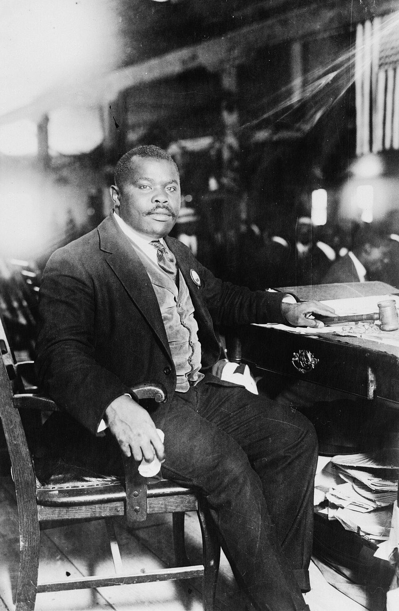

Directions: Study the photograph and the background note, then answer the questions.

Background. Marcus Garvey led the Universal Negro Improvement Association, the UNIA, the largest Black mass movement of the era. The gavel in his hand is the tool of a presiding officer: Garvey chaired the UNIA's conventions, which adopted declarations, elected officers, and planned the movement's businesses, including the Black Star Line shipping company. This photograph was taken in August 1924, one year after his conviction for mail fraud and one year before he entered federal prison.
1. What details in the photograph present Garvey as the head of a government or a court, rather than as a private citizen? Name two details and state what each one claims.
2. A family in Mississippi in 1917 reads a newspaper carried south by Pullman porters. Name the paper, and give two things it printed that were meant to move the family north.
3. The Black Star Line was financed by five dollar shares sold to Black buyers. What was the line meant to do, and what happened to it and to Garvey by 1927?
4. A Chicago landlord in 1919 subdivides a building in the Black Belt and raises rents, knowing his Black tenants have few other choices. Name the two forces from this lesson that confined those tenants to districts like the Black Belt, and name one organization that worked on the problem.
1. What details in the photograph present Garvey as the head of a government or a court? Any two, with the claim stated. The gavel in his left hand claims the authority of a presiding officer who calls a body to order and rules on its business. The desk covered with papers, with more papers stacked below, claims an administration conducting real business. His formal dress, vest, and the badge on his lapel claim office rather than private life. The seated, direct pose at the center of a hall claims a leader being recorded in his role. Students should connect the detail to authority, not only describe the scene. (Blueprint 11)
2. Name the paper, and give two things it printed that were meant to move the family north. The Chicago Defender, founded by Robert S. Abbott. Any two: train schedules; job notices; letters from migrants who had gone ahead; the announcement of the Great Northern Drive set for May 15, 1917, urging readers to leave together. (Blueprint 10)
3. What was the Black Star Line meant to do, and what happened to it and to Garvey by 1927? The line was meant to carry Black trade across the Atlantic, under Black ownership, financed by five dollar shares sold to Black buyers. It bought old ships in poor condition and lost money. Garvey was convicted of mail fraud in 1923 for selling stock in a ship the line did not yet own, entered federal prison in 1925, and was deported to Jamaica in 1927 after President Coolidge commuted his sentence. (Blueprint 11)
4. Name the two forces that confined Black tenants to districts like the Black Belt, and one organization that worked on the problem. Restrictive covenants, agreements among white owners barring sales or rentals to Black families, and violence or its threat, shown in the dozens of bombings of Black homes in Chicago between 1917 and 1921. High rents in subdivided buildings were the result, not a third force. The organization: the Urban League, whose Chicago branch met trains, inspected lodging, sought houses, and pressed to open occupations. The NAACP is also acceptable if the student ties it to fighting exclusion in law. (Blueprint 10)
Teacher note. This check is formative. Question 1 is the observation diagnostic: students who see only a man at a desk have not yet read the gavel and the papers as claims to authority. Question 4 predicts success on the writing task, because it asks students to separate a condition (high rents) from the forces that produced it.